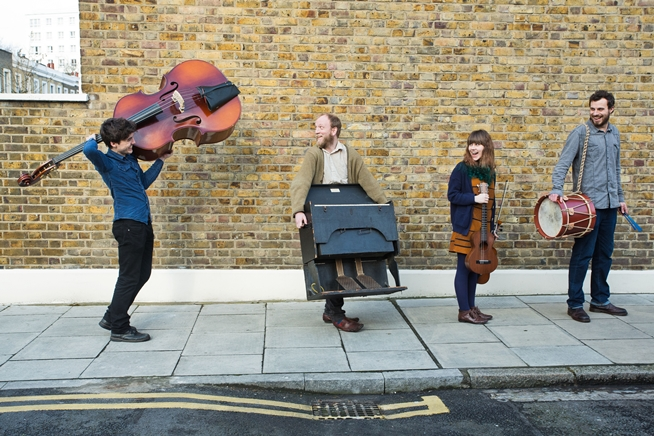

Biography
Enderby's Room are a London-based indie-folk band whose delicate harmonies, unusual instruments and vivid storytelling have been described as 'intricately woven and desperately beautiful' by Folkroom Records. Enderby's Room features Dan Mayfield (guitar, ukulele, vocals), Emma Winston (harmonium, accordion, vocals), James Humphries (percussion, banjo), Donal Sweeney (double bass), Sophie Koonin (guitar, Omnichord, vocals), and Nathan Thomas (French horn).
At times they capture the sumptuous melancholia of Low; at others, they're finding new shapes for indie folk.--How Does It Feel To Be Loved
[An] accomplished batch of songs...their soft folky sound was as good as anything else I'd hear all weekend.--Neon Filler, Indietracks Festival 2013
